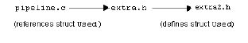

To use Simplify.h
1 cd
2 discover -learn
3 Set /xip_private as your home project by clicking it, and then clicking OK.
4 Double-click /xip_shared to open the system project in the Browser.
5 Double-click /xip_shared/src to view the source files.
6 Click /xip/src/pipeline.c to select it. Make sure that it is highlighted.
7 From the Browser menu bar, click CM > Check Out (or similar command, depending on your integrated CM system) to check out a copy of this source file to your local project.
8 In the Browser, click the Up button twice to return to the top level.
9 Double-click /xip_private to open your local project and display the local project source files. This should display pipeline.c, the only file you have checked out to your local project.
10 Double-click /xip/src/pipeline.c to display it in the Viewer.
11 Go to the Viewer and add include file extra.h to the end of the header section of pipeline.c:
#define _NO_PROTO
#include <xip.h>
#include <externals.h>
#include <stage.h>
#include <image_win.h>
#include <extra.h>
12 Scroll to the bottom of the file and add a reference to a structure called Used as the last line of the file.
DBG_OUT("UiwoCBMenu");
}
struct Used test;
13 Click Update.
Structure Used does nothing; it merely consists of three int data members.
Used is defined in header file extra2.h. Source file pipeline.c does not include extra2.h directly. The file pipeline.c includes extra.h, which includes extra2.h. The file pipeline.c does not use anything from extra.h other than extra2.h.

14 Click Tools > Simplify from the model browser menu bar.
DIScover examines the header files included by pipeline.c and finds that extra.h defines nothing for pipeline.c. However, extra2.h, which is included by extra.h, defines struct Used, which is now referenced by pipeline.c.
When Simplify Includes finishes, DIScover comments out the necessary include file and adds the include file(s) that pipeline.c actually uses:
#include <xip.h>
#include <externals.h>
/* #include <stage.h> */ /* Automatically commented out *
/* #include <image_win.h> */ /* Automatically commented out */
/* #include <extra.h> */ /* Automatically commented out */
#include <extra2.h> /* Automatically substituted *
15 Quit DIScover.
If prompted whether or not to save any files, click Quit Without Saving.